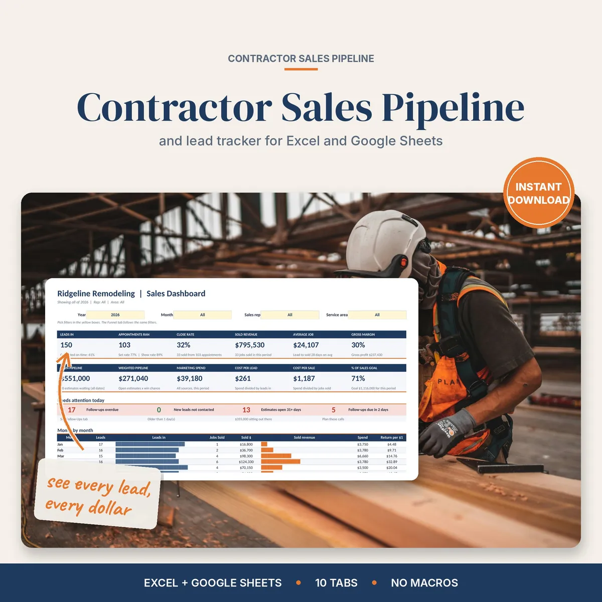

Excel and Google Sheets lead tracker
Sales pipeline tracker and lead tracker for contractors
Most leads don't say no. They go quiet because nobody called back. This tracks every lead from first call to sold job, and shows which marketing actually brings in work.
$10.00 on Etsy · Instant download

Who it's for
For contractors who lose jobs to silence
If leads come in by phone, web form and word of mouth and nobody's sure who called who back, this is for you.
The Follow-Ups tab builds your call list for you, oldest first, and late calls turn red. The dashboard puts 12 numbers on one screen, from leads and close rate to cost per lead and % of goal. Filter by year, month, sales rep or service area.
You get a sample file with a made-up remodeling company so you can see how it works, plus a blank file for your own.
What's inside
What's in the sales pipeline tracker
Dashboard
12 numbers on one screen: leads, close rate, sold revenue, average job, margin, open and weighted pipeline, spend, cost per lead, cost per sale and % of goal.
Needs attention
Overdue follow-ups, new leads nobody called and estimates sitting 31+ days.
Funnel
Lead in, contacted, appointment set, ran, estimate sent, sold. See where leads drop off and days per step.
Lead sources
Cost per lead, cost per sale and revenue per $1 spent for each source.
Follow-Ups
The call list builds itself, oldest first. Late calls turn red.
Leads and more
500 lead rows, Marketing Spend, an Archive for year end and Settings for your areas, services, sources, reps and goals.
Reports
Service types, rep goals and commission, lost reasons, open estimates by age, referrals and repeat customers.
Form Inbox
In Google Sheets, connect a Google Form and new web leads show up.
Printables
A lead intake sheet, a phone call log and a weekly follow-up list.
How it works
Log the lead, make the call
Download
Buy on Etsy and download the files. Open them in Excel, or upload them to Google Drive and open them with Google Sheets.
Set up
Open the blank file and fill in Settings with your areas, services, sources, reps and goals.
Log leads
Add every lead and your marketing spend. Connect a Google Form if you use Sheets.
Work the list
Open Follow-Ups, call oldest first, and check the dashboard for what's working.
Questions
Sales pipeline tracker FAQ
Do I need Excel?
No. It works in Excel and in free Google Sheets. Upload the file to Google Drive and open it with Sheets.
Can I use it on my phone or iPad?
Yes. Open the sales pipeline tracker in the Google Sheets or Excel app on your phone or iPad. Setup is easier on a computer screen.
How do I get it?
It's an instant download from Etsy. Buy it, download the file and open it. Nothing ships.
Are there macros or a subscription?
No. There are no macros, no subscription and nothing locked. You pay once on Etsy and the file is yours.
Can web leads come in on their own?
Yes, in Google Sheets. The Form Inbox connects to a Google Form, and new web leads show up there. Custom versions are available through Etsy messages.
Instant download
Get the sales pipeline tracker
$10.00 on Etsy. You'll see the full listing and check out there.
Get it on EtsyMore kits